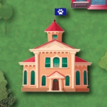

Agente "jmeno ve hre", děkujeme, že ses dobrovolně přihlásil pomoci myšímu
společenství vypořádat se s arogantními kočkami! Zde najdeš přehled
všeho, co potřebuješ znát, než se pustíš do mise. Můžeš sem nahlédnout
kdykoli v průběhu hry.
Na mapě najdeš všechna místa, kde se kočky
shromažďují. Ne všechna budou otevřená. K těm zavřeným musíš
nejdřív získat klíč. Doporučuji si projít aktivní budovy dřív,
než začneš šířit Kočvid-19.

V budovách jde do tuhého – shromažďují se tu
kočky. Ale bacha, je tu háček: musíš nejprve vyřešit rébus, který
je v budově ukrytý. Některé rébusy nelze vyřešit hned – je potřeba
nejprve nastřádat indicie.
Do začátku získáváš 5 zkumavek s Kočvidem-19. To
znamená, že můžeš nakazit 5 koček, které budou nemoc šířit dál. S
výběrem nejvhodnější kočky Ti pomůže správné řešení daného rébusu.
Získáváš také digitální hodinky, které Ti
odměřují čas. Na vyřešení všech rébusů máš 60 minut,
než kočky zareagují na epidemii a zavedou přísná opatření. Potom číslo
R poroste jen o 25% původní hodnoty.
K řešení rébusu si nachystej papír a tužku,
umělou inteligenci, kočičího zajatce, cokoli je
povoleno! Odpověď si ale pořádně
rozmysli, protože každý rébus lze řešit jen jednou. Všechny rébusy lze vytisknout.
Všechny nalezené rébusy a indicie se Ti ukládají do
inventáře. Můžeš tak rozpracovat více rébusů
zároveň a vracet se k nim bez použití mapy. Inventář je plně
automatický – stačí jen kliknout na co potřebuješ.
Uložení hry zvol tehdy, když potřebuješ na
nějakou dobu odjet z města a k misi se vrátit později. Přenést se
v čase zpět do uloženého stavu mise je možné z domovské stránky.
V městě Mňau-chen je jedno místo, kam můžeš chodit pro
nápovědu, když Ti nepůjde vyřešit rébus. Získání
nápovědy Tě však stojí drahocenný čas – za každou radu zaplatíš 5
min z celkového limitu.
Teď už vše víš a můžeš se pustit do akce! Vkládáme do Tebe veškeré
naděje – tato mise bude naším finálním vypořádáním se s kočkami!